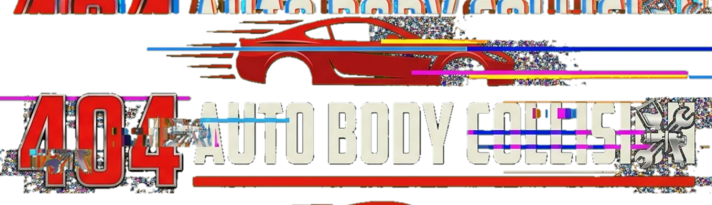

Collision Repair · Westchester County, NY
Laser measuring on the frame bench. Every millimeter of deviation documented before a single tool touches the car.
Hydraulic pulls bring the unibody back to factory spec — within 1mm of OEM datum points.
Dents rolled out, panels re-hung and gapped. New OEM bumper cover fitted and aligned.
Factory glass, new seals — and every camera and sensor recalibrated to spec.
Spectrophotometer color match, downdraft booth, ceramic clear. Indistinguishable from the day it left the plant.
Cut, polish, detail, quality inspection. Like the accident never happened.
Auto Body & Collision Repair — Westchester County, NY
Computerized measuring and hydraulic straightening back to factory datum points. Certified structural repair on steel and aluminum.
Computerized color matching, full downdraft spray booth, factory-grade clearcoat. Lifetime warranty on every refinish.
OEM glass replacement plus calibration of lane-keep, collision-avoidance and camera systems on late-model vehicles.
Yes — we work with all major insurance carriers and handle the claim paperwork directly, so you have one point of contact from estimate to pickup.
Most repairs run 3–7 business days depending on parts and severity. You get a written timeline at drop-off and status updates along the way.
Every repair is backed by a written lifetime warranty on workmanship for as long as you own the vehicle.
Yes — we'll arrange a loaner or coordinate your insurance rental so you're never left without a way to get around.
Our shop is I-CAR trained and follows OEM repair procedures, including ADAS sensor recalibration on late-model vehicles.
Yes — free written estimates. Send a few photos for a preliminary number, then bring it in for a final in-person appraisal.
Free estimates. All insurers accepted.
Drop the car off, take a loaner, and get it back the way you saw it at 100%.